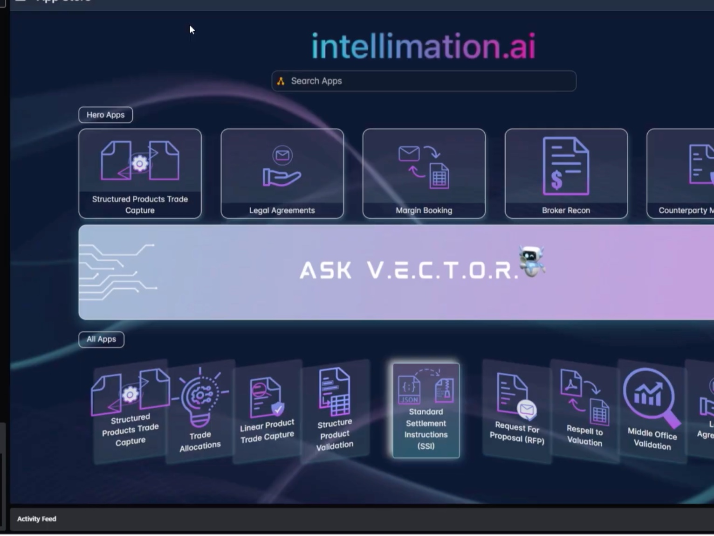

Next project
Executive Marketing & Events

Workflow Design & Integration UX for a Partnership Launch · intellimation.ai
intellimation.ai partnered with Symphony, the secure messaging and workflow platform used across global financial services, to bring its Vertical AI agents directly into the place traders and operations teams already work. I contributed to that launch: mapping the workflows the integration had to support, and designing the wireframes that showed how the two products would behave as one.
The partnership itself was a commercial agreement between two companies. My contribution was making it concrete. A partnership announcement is an idea until somebody can show a middle-office director the exact screen where a margin call gets resolved without leaving their messaging window.
Some visuals are editorial recreations created for portfolio presentation. Original client materials have been anonymised or recreated where necessary due to NDA and confidentiality obligations. All project work, deliverables and outcomes reflect genuine professional experience.
The AI agents went live on the partner marketplace, and the announcement credited the team behind it.
Months of collaboration and problem-solving ended in a short announcement: the AI agents were live on the marketplace and available to the network. Being credited in that announcement is the part I keep, because partnership work is rarely visible from the outside and this made the contribution concrete.
Read the launch announcement on LinkedIn ↗Prime brokerage and collateral teams are under pressure from three directions at once.
The underlying issue is fragmentation. The information needed to resolve a dispute or process an agreement sits in unstructured documents, chat threads and structured trade systems that do not talk to each other. People bridge that gap manually, and that is where the delay and the error rate come from.
The integration had to work whether the task began inside the messaging platform or outside it.
| Flow | Starts | What it handles |
|---|---|---|
| Flow 1 | Outside the platform | Unstructured input, documents and email, pulled in, processed by the AI agents, resolved in the chat window |
| Flow 2 | Inside the platform | Start and finish without leaving the messaging environment, structured trade, inventory and agreement data handled in place |
This distinction did more work than anything else in the project. It is easy to design an integration that assumes a tidy starting point. Real operations teams receive a PDF by email, get a chat message about a break, and pick up a settlement failure from a system alert, often on the same issue. The workflow had to accept all three entry points and still end in the same resolved state.
Five operational areas where the AI agents and the messaging platform had to hand off to each other cleanly.
Each area had the same underlying shape: a document or data point arrives, the AI agent reads and validates it, and a person is either notified or asked to decide. Counterparty lifecycle covered KYC and AML checks on incoming client data. Legal agreements covered ISDA CSAs, repos and loan documentation. Margin management covered calls, disputes and settlement failures. Content distribution covered getting sensitive research to clients through a compliant, auditable channel.
Mapping them consistently mattered because it meant one interaction pattern could carry all five, rather than five products bolted together behind a shared login.
Eleven screens taking a user from marketplace discovery through to a resolved workflow.
The wireframes traced the whole journey: searching for the product in the marketplace, installing the add-in, landing in the solution set, then working through each workflow to a conclusion. Crucially, they showed states rather than screens. Margin management was not one view but three, covering a call agreed, a settlement failure and a dispute. Legal agreements covered an executed agreement arriving and being successfully processed. Counterparty management covered documents received, processed, and flagged for a data quality dispute.
Designing the unhappy paths alongside the clean ones is what made the integration credible to a technical audience. Anyone can show software working. Showing what it does when a document fails validation is what a risk-conscious buyer actually wants to see.
The wireframes themselves are covered by a non-disclosure agreement and are not shown here. What follows is the publicly released product they fed into.
The integration shipped, and was demonstrated publicly at the platform's annual conference in New York.
The demo, published on Symphony's own YouTube channel, shows the Vertical AI engine running inside Symphony Messaging as an installed app, with the workflow areas visible as a live product surface: margin booking, legal agreements, counterparty management, broker reconciliation and structured products trade capture, alongside an integrated assistant.
It is the clearest evidence I have that the work landed. The stated result in that demo is the one that matters commercially: margin operations tasks that previously took hours resolved in minutes, inside software the institution had already deployed.
Watch the demo on Symphony's channel ↗The platform the product was being integrated into, by the numbers.
Integrating into an established network rather than asking institutions to adopt a new tool changed the commercial maths entirely. The product did not need to win a procurement cycle to be seen. It needed to be discoverable inside software these firms had already approved, already deployed and already trusted, which is why getting the integration experience right carried more weight than any individual campaign would have.
What I took from contributing to a partnership launch.
Partnership work is a different discipline to marketing a product you control. Every design decision had to make sense to two companies with their own conventions, their own users and their own view of what good looks like. The wireframes were as much an alignment tool as a design artefact: they gave both sides something specific to react to, which moved conversations faster than another round of written specification would have.
The lesson I would carry into any go-to-market role is that the fastest way to unstick an abstract discussion is to draw it. Once there was a screen showing exactly where a dispute got resolved, the debate stopped being about whether the integration made sense and started being about the details, which is the conversation you actually want to be having.